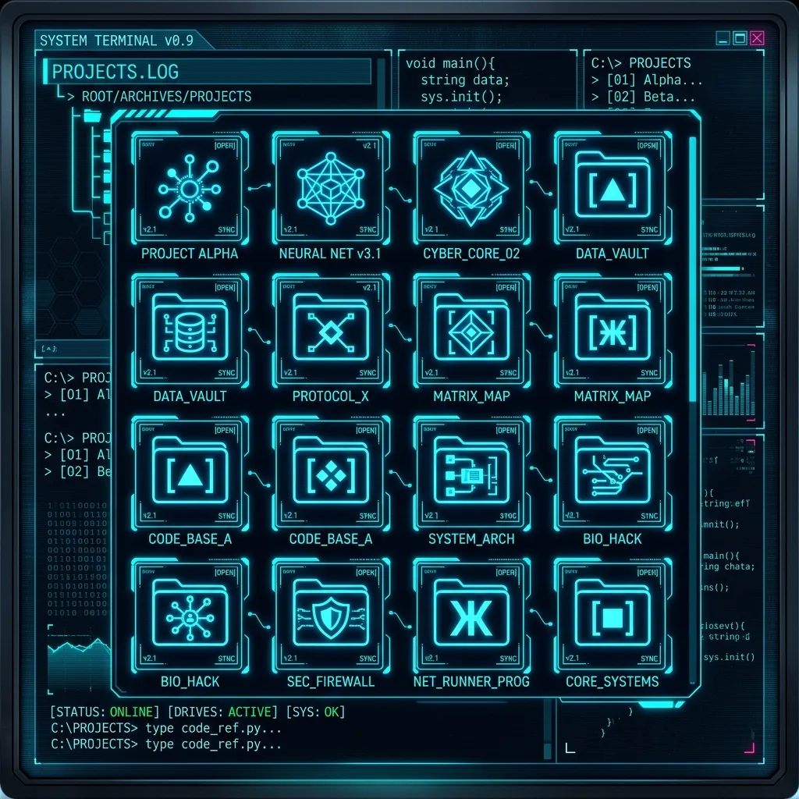

Interactive terminal
01. About_Me
I am a QA Engineer, but my scope goes far beyond that. I focus on Performance testing and I am increasingly fascinated by Security, a field I am actively exploring.
Additionally, I deeply enjoy statistics and data science. In my master's thesis, I compared the performance of traditional, deep learning, and foundation predictive models (ARIMA, NBeats, Chronos, etc.).
In my free time, I am a huge fan of Star Wars and the sci-fi genre in general. This website is a reflection of my fascination with technology, data, and the future.
QA & Security
Ensuring quality and probing systems for weaknesses.
Data Science
Predictive models and data analysis.
Sci-Fi Fan
Star Wars and fascination with future technologies.
02. Tech_&_Skills
Test Automation
C# on a proprietary NUnit-based framework — CRUD tests over API clients generated from the backend, plus microservice service tests.
Security & Compliance
Dependency & vulnerability scanning (.NET, yarn), SPOC for external pentests. CVE · CVSS · NIST · ASVS · NIS2, ISO 27001 foundations.
Performance Testing
Load & stress testing with k6 — JavaScript scripting, thresholds, and result analysis.
.NET / C#
Primary language — functional & API tests, test framework extensions, microservice suites.
Python · Data & AI
Statistics & Data Science; time-series forecasting with ARIMA, N-BEATS, Chronos, deep learning & foundation models.
DevOps & IaC
Build & release pipelines in Azure DevOps; infrastructure-as-code starter with Pulumi.
03. Projects
Master's Thesis: AI Models
Predictive modeling using deep learning and foundation models for time series forecasting. Explores statistical methods and advanced architectures applied to real-world datasets.
lptyna.cz archived
A website I built for my wife's lactation-consulting practice, entirely without frameworks — to understand how the web works at a low level and keep control over every element. The business has since wound down, so the project lives on as open source.
Smart Hallway Lights
A smart lighting controller for my hallway, built on ESP hardware in C++. Actively evolving — LittleFS file serving, ESPAsyncWebServer with WebSockets, non-blocking PWM, and MQTT with a Captive Portal are on the roadmap.
Interactive Statistics
A repository born from the desire to visualize basic and advanced statistical concepts while studying course material at university. Features interactive visualizations and data modeling.

Other GitHub Projects
A collection of various other repositories including full-stack applications, microservices, and experiments. Check out my GitHub profile for the complete list.